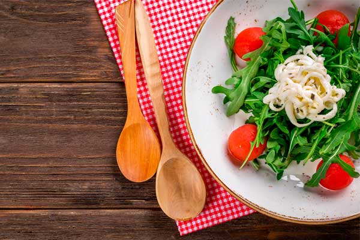
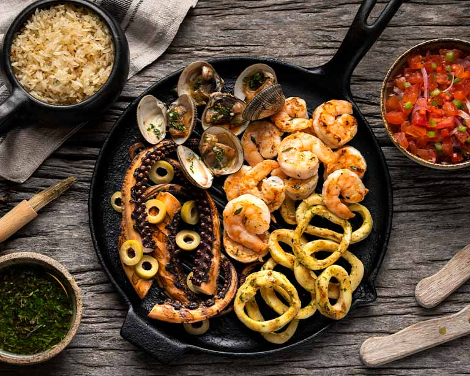

Alto valor nutricional: Los alimentos fitness se centra en proporcionar nutrientes esenciales. Entre ellos proteínas magras, carbohidratos complejos, grasas saludables, vitaminas y minerales, en las cantidades adecuadas para mantener un cuerpo saludable y en forma. Precio:150.000
Cocina De Temporada
La cocina de temporada se basa en la utilización de ingredientes frescos que están en su máximo esplendor en determinadas épocas del año. Te contamos los beneficios de consumir frutas y verduras de temporada, así como algunas recetas deliciosas que puedes preparar con los productos del momento. Precio:260.000
Cocina Pasteleria
La pastelería engloba a todos aquellos profesionales que se dedican a la elaboración de recetas dulces, como galletas, tortas, pasteles, cupcakes, postres, etc., cuyos ingredientes básicos son el azúcar, la harina, la mantequilla, el huevo, la leche y el chocolate. Precio 300.000
Cocina Mixta
La cocción mixta, a la que también se le conoce como cocción combinada, se trata de una mezcla de cocción en seco con humedad y/o en medio graso Precio:190.000
Cocina De Vanguardia
Consiste en transformar las texturas, formas y temperaturas de los ingredientes sin que pierdan los sabores originales. Mediante esta técnica se transforman algunas propiedades de los alimentos pero su sabor no cambia, por lo que acentúa el sentido principal de la gastronomía Precio:110.000

Cocina Mediterranea
Se centra en comer alimentos como frutas, verduras, hortalizas, granos integrales y panes con alto contenido de fibra, y aceite de oliva. La carne, el queso y los dulces están muy limitados. Los alimentos recomendados son ricos en grasas monoinsaturadas, fibra y ácidos grasos omega-3. Precio 320.000
Cocina Gourtme
Se trata de una forma de cocinar que se enfoca en la calidad de los ingredientes y la presentación de los platos. El objetivo de ofrecer a los comensales una experiencia gastronómica única e inolvidable. Precio:500.000

Cocina De Mar
La comida de mar o también popularmente conocida como mariscos son aquellos animales invertebrados comestibles que proceden del mar los cuales se pueden comer crudos o cocidos ya sean fritos, a la parrilla o asados para preparar cocteles, ceviches, aperitivos, platos fuertes, sopas o caldos. Precio:400.000